Developing a smart documentation tool for early childhood educators
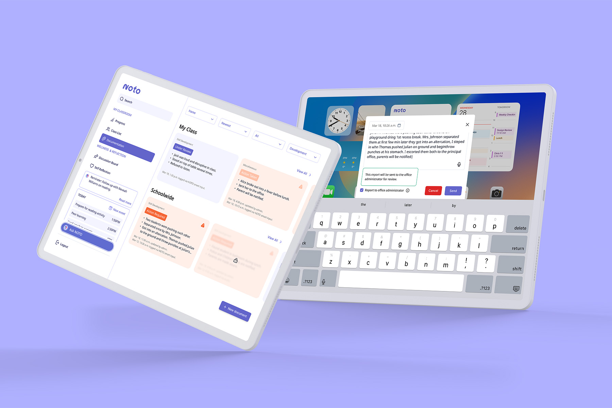
Overview
Neurodiversity is rising in today's classrooms, but existing support systems for educators often prioritize administrative needs over practical support. Fragmented support puts responsibility on already-overworked teachers to put together their own resources. Through extensive research and conversations with educators, we saw a lack of accessible professional development, inefficient behavioural tracking, and heavy administrative load. We designed NOTO to accelerate documentation and provide practical training modules, with a professional development dashboard, classroom management tools, smart documentation, and AI assistant.
NOTO was developed as part of Red Thread Innovations' Purposeful Innovation mentorship and came in second place!
Team
Sketchy Solutions includes Marriane Angga, Trang Do (me!), Jade Guerin, Allen Lin, and Hailey Pham.
Role
UX/UI Researcher and Designer
Duration
Jan – Apr 2025 (14 weeks)
Problem space
Neurodiversity is rising, but teacher support isn't.
Today's classrooms are more diverse than ever, but the support systems behind them have not kept up. Educators are increasingly expected to meet the needs of students with a wide range of abilities and learning profiles, often without adequate training, support, or time. While inclusive education is widely promoted, many educators are left to implement it alone—without consistent support staff, practical professional development, or actionable tools.
The human cost of system failure.
This problem is magnified by alarming rates of teacher burnout and attrition. These numbers reveal a system built on reactive workarounds instead of proactive infrastructure. Fragmented training, administrative overload, and inconsistent inclusion support leave teachers stretched thin and students underserved.
While educators face escalating demands, most tools are built for administrators, not teachers. They focus on performance metrics and compliance, not empathy, real-time support, or inclusion. Our opportunity lies in this disconnect. The solution does not have to be complex: teachers do not need more platforms, they need support systems that understand their classroom realities.
44%
of K-12 teachers report frequent burnout.
(Devlin Peck, 2025)
76%
of teachers report emotional exhaustion.
(Elka Jacobs-Pinson, 2025)
55%
of teachers plan to leave the profession earlier than expected.
(NCES, 2022)
68%
cite workload as the main factor for stress.
(Heubeck, 2022)
Research
Looking at trends in education technology and inclusivity in the classroom, we saw a gap in support for neurodivergence for both students and educators.
The growing emphasis on mental well-being and the importance of AI literacy highlight the need for supportive, adaptive learning environments. We saw a strong desire for personalization and flexibility in education, alongside increasing support for neurodivergent students—all hindered by the digital divide and paywalls. Fostering parent-teacher collaboration and providing free, easy-to-access content for educators are vital for ensuring effective support for sutdents and educators.
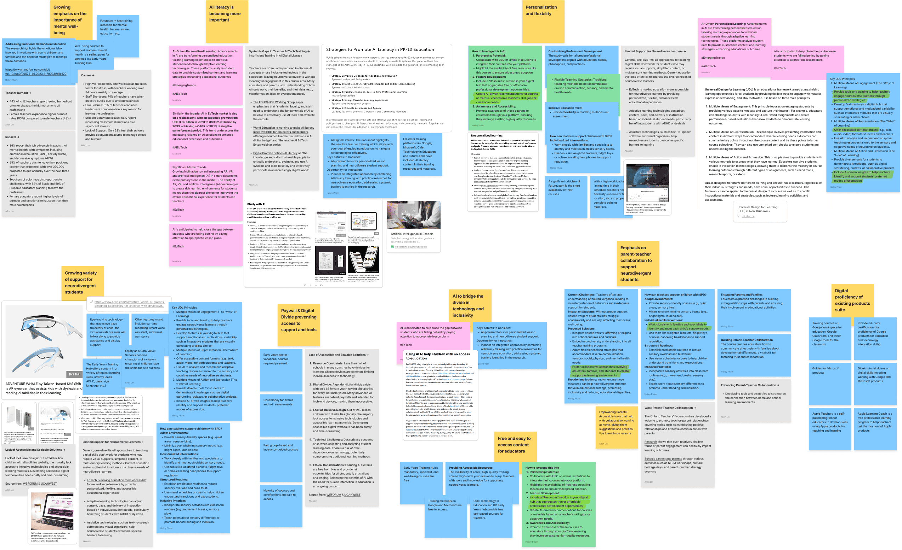
We noted hypotheses based on our deep dive into online forums, then verified them through real-life conversations with educators.
Online stories and discussions showed us how under-supported educators are, especially with neurodivergent students. Through our interviews, we uncovered two core realities: teachers don't want to pay out-of-pocket for one more platform, and any tool we build must reduce—not increase—their workload.
Inclusion efforts are well-intentioned, but unsupported.
Teachers feel unprepared to support neurodiverse learners without on-the-ground guidance. Existing platforms do not have integrated frameworks for adaptive learning, especially in neurodiverse classrooms.
Professional development is impractical and out of sync.
61% of teachers say PD lacks real-world relevance and is too time-consuming. PD tools available in the market are too lengthy, costly, and lack accessibility during regular working hours.
Administrative demands outweigh teaching.
Educators face challenges in managing paper logs and non-integrated digital apps, causing inefficiencies. Documentation and planning steal hours, leaving less time for direct support and reflection.
The interviews validated the need for a buyer-user persona split. Our users are the educators, but our buyers are often the administrator or school board.
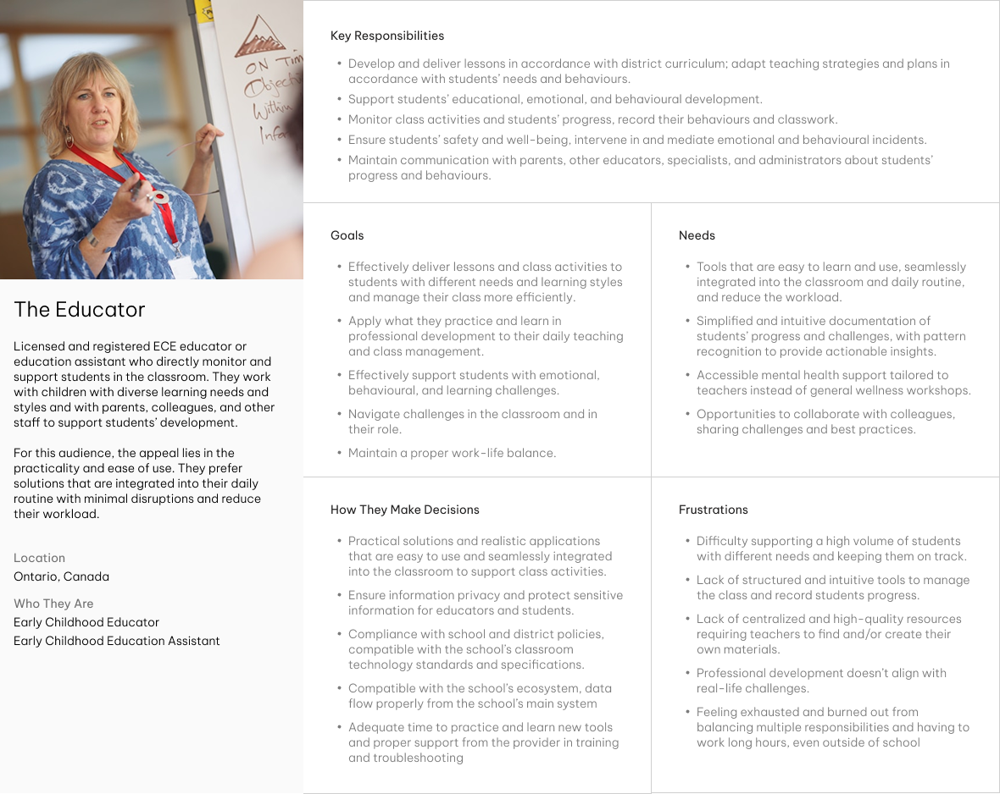
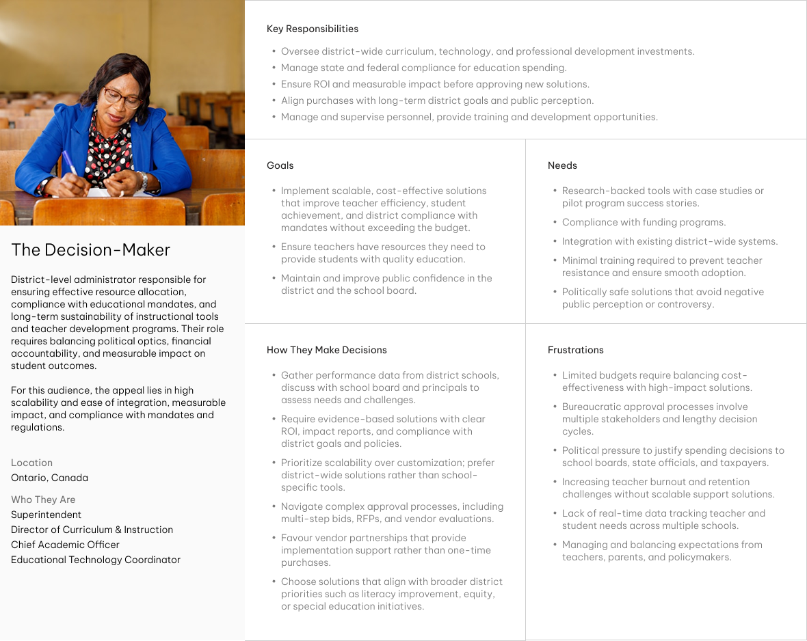
From research insights, we uncovered core value pillars and translated them into NOTO's core concept.
Teacher-Friendly Digital Assistant
Teachers need real-time, hands-free support to manage growing classroom complexity. They need support for documentation, task management, and real-time guidance.
Scenario-Driven Professional Development
Current professional development is disconnected from daily practice. Teachers need short, practical PD tied to real situations.
AI-Powered Behavior Tracking
Teachers lack personalized and accessible tools to support inclusion. Predictive tools will help spot and respond to trends with resources to support neurodivergent learners.
Centralized Voice & Visual Logging
Teachers need smart, streamlined documentation with voice-to-text, image capture, and progress tracking—organized in one intuitive system.
Wellness-Embedded UX
Burnout is real and rising. Teachers need a compassionate design philosophy that provides micro-reflections, reduces cognitive load, and respects teacher bandwidth and emotional energy.
Design
Our features are divided into a web platform and a mobile companion app based on teachers' needs.
Our initial idea for a professional development platform does not address the need for accessible in-the-moment communication and learning. We decided to outline 2 platforms: the desktop platform focuses more on administrative actions, while the mobile app focuses on providing real-time support.
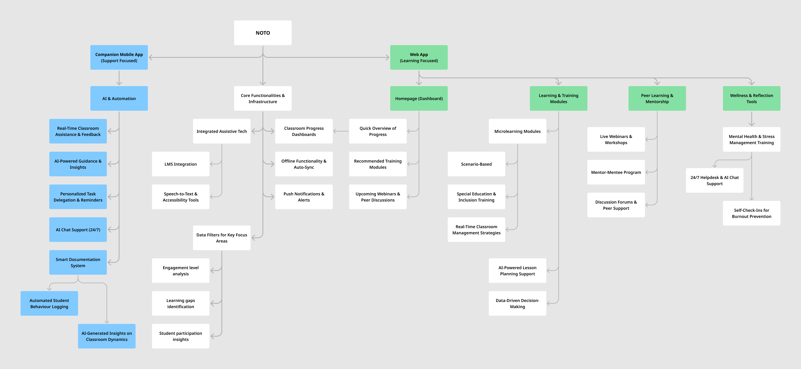
Coming into the design and testing stage, we focused on refining the 4 core capabilities.
Professional development dashboard
A visual dashboard of bite-sized, relevant, and certification-aligned modules, with tangible progress indicators, that educators can complete during school hours.
Classroom management
Real-time classroom tool designed with data visualization that pulls from student profiles and classroom behaviour logs, offering an overview at a glance.
Smart, streamlined documentation
NOTO allows educators to voice-record or jot down notes on the go. Raw inputs are then distilled into structured outputs for report cards, logs, or communication with caregivers.
AI assistant
NOTO AI provides just-in-time assistance—suggesting classroom strategies, helping with documentation, or even flagging helpful PD modules in a hands-free format.
I led the design and testing of the smart documentation feature for the mobile platform. Since this feature needed to be easily accessible and to allow messy inputs, we thought a widget would be the most suitable.
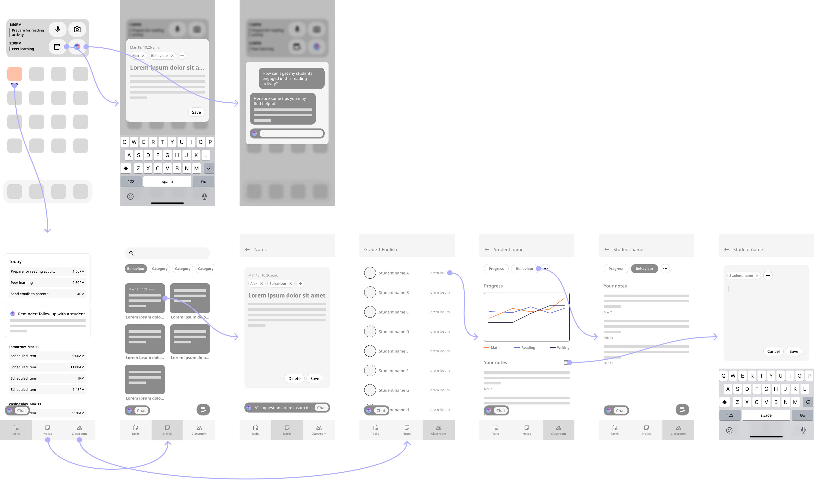
The widget idea was a step in the right direction, but we missed the mark on clarity and use case.
Our first big mistake was designing this feature for phones, since it may not be appropriate for teachers to take out their phones in the middle of class. Many teachers have a tablet as they teach, so we should have developed this companion app and widget for tablets. Our second mistake was trying to cram many features and information into the widget. Test participants mistook the purpose of icons and didn't know what features were supposed to be represented.
The smart documentation was rebuilt as a brain-dump tool and its interface reworked for tablet-first compatibility.
A more structured input form improves clarity but slows teachers down. Our team had the idea to use AI to distill messy inputs into necessary fields, allowing teachers to forego structure when they need to act fast. These notes and reports can be revisited and updated at a later time. We left only the most necessary inputs in the form.
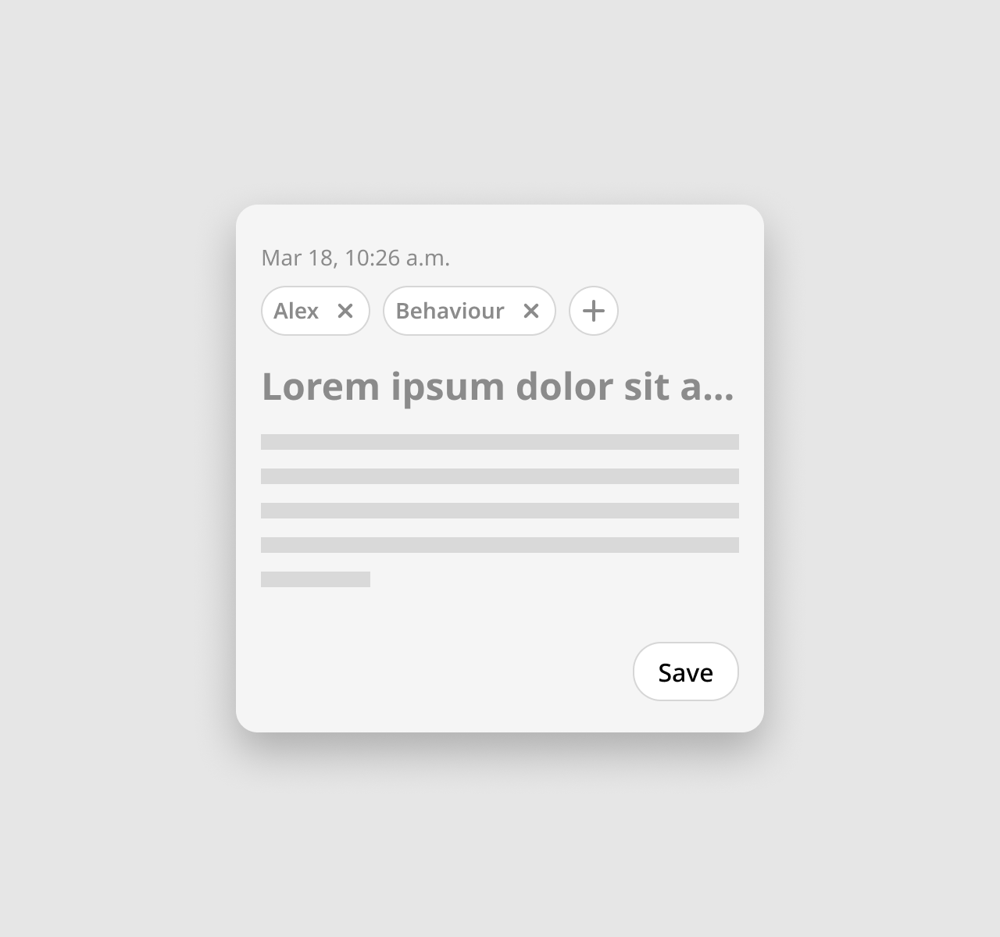
The widget was redesigned to only show the most important features, with proper labels to avoid confusion.
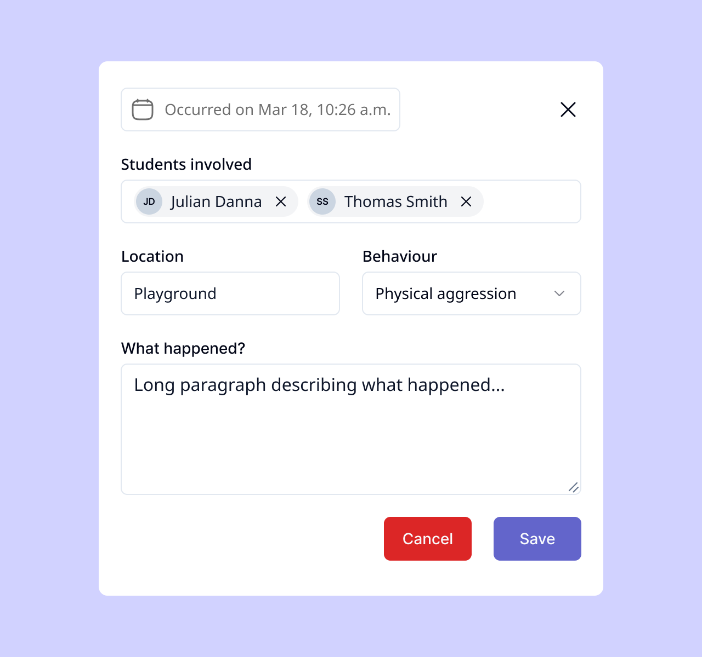
As our prototypes were coming together, our visual designers Allen and Marriane started adapting atoms from Tailwind component library to fit our visual direction and ensure consistency and efficiency when we built the custom elements we needed.
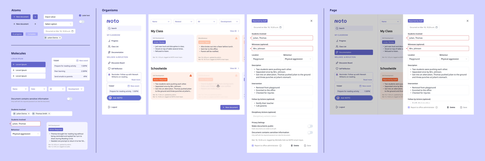
With ready-made components from Tailwind and our customized design system, I built out the remaining UI elements for the tablet platform. As Marriane moved on to designing our pitch deck and proposal, I worked with Allen, who was in charge of the desktop platform, to ensure consistency and accessibility. Despite minor styling and spacing inconsistencies that we had to overlook to complete the prototypes by the deadline, both platforms were visually and functionally cohesive.
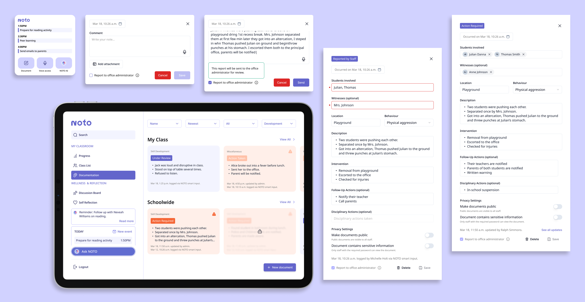
Outcome
Meet NOTO: An AI-powered support system designed for the day-to-day reality of early childhood educators—simplifying classroom management, accelerating documentation, and delivering on-the-go professional development.
Designed with early childhood educators, NOTO meets teachers where they are—offering real-time support, inclusive learning strategies, and streamlined administrative tools. Whether tracking student growth, navigating Individual Education Plans, or exploring bite-sized professional development content, NOTO empowers educators to do what they do best—teach, connect, and care.
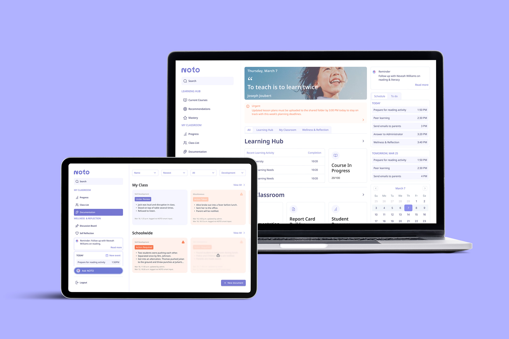
The documentation tool organizes brain dumps into insights—teachers can speak, snap, or type, and NOTO sorts it all.
NOTO's documentation feature accelerates notetaking and reports, allowing educators to reclaim lost time and reduce redundancy. Teachers can quickly voice-record or jot down notes. These rough notes are then distilled into structured outputs for report cards, logs, or communication with caregivers.
The next step for NOTO is live testing and observation in classrooms to validate what success looks like for educators.
Engagement
We will measure usage of core features (PD dashboard, classroom tools) and frequency of AI interactions during non-crisis and in-the-moment scenarios to get a sense of whether NOTO is intuitive, timely, and integrated into natural classroom flow.
Impact
Time saved on admin tasks (e.g. report cards, behaviour logs) and teacher-reported reduction in overwhelm or decision fatigue will tell us how NOTO is reducing workload and stress.
Adoption
We will use the number of active users per school, school/district adoption rate, and admin support for integration to gauge scalability, institutional buy-in, and potential for long-term sustainability.
Well-being
We will gather data on voluntary use of Wellness Center, teacher-reported benefit from self-reflection tools, and uptake of peer mentorship to ensure emotional tools are seen as helpful and supports trust in private, safe spaces.
Takeaways
Going into this project, I had a working understanding of components, styles, and variables in Figma, but I didn't have enough experience to leverage them efficiently. I learned from my teammates how to adapt an existing component library and work with variables to design faster. This project also showed me the different ways storytelling can be effectively leveraged in presentations, through the narrative of our team's proposal and the other teams' presentations.
A crucial reason behind our success in this 4-month project was our trust in each other. Our work flows and opinions didn't always align, and we had as many moments of disagreement or frustration as cohesive collaboration, but we had a good idea of and trust in each other's abilities. We had a good mix of research, design, and presentation strengths, so we could take a step back and focus on our tasks, instead of worrying about every part of the project. I'm grateful to have teammates who would push me out of my comfort zone but also would readily support me when needed.